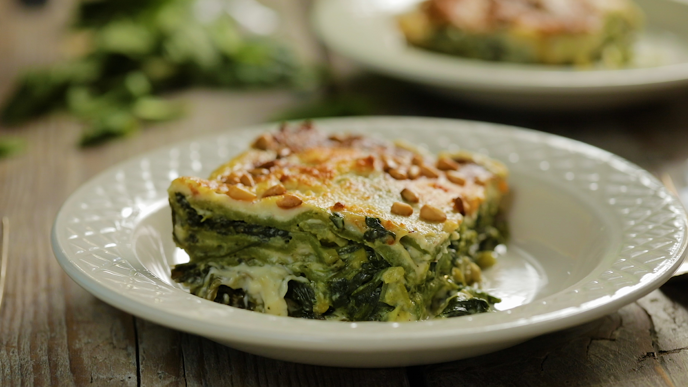
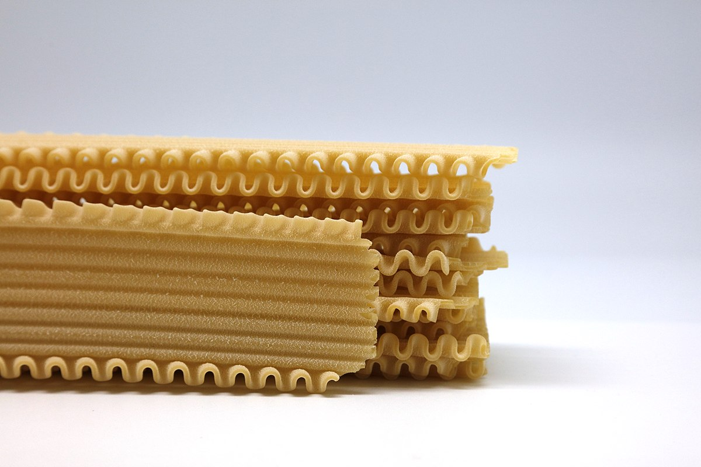

O lazanjama
Lasanje su vrsta paste koje su napravljene od vise slojeva ravnih listova. Lazanje su Italijansko jelo koje se pravi od vise slojeva pasta i razlicitih filova kao sto je ragu (mleveno meso i paradajz sos). Nakon toga lasanje se peku u rerni i seku u kocke ili u pravougaonike za ljude da jedu.

Istorija i poreklo lasanja
Lasanja je tip paste koja je izumeta u Italiji pre oko 1000 godina. Pre, ljudi nisu imali rerne, pa su hranu kuvali u vodi. U 15.veku, knjiga recepata koja se zvala Liber de Coquina je napisana. U ovoj knjizi prvi recept napisan je bio za lasanje. Lasanje su originalno bile napravljene od fermetizanog testa koje je izravnato i onda kuvano. Nakon toga, poprskana sa sirom i zacinima i onda pojedena sa malim stapom. Oko 1600. godine, ljudi u Italiji su poceli da jedu lazanje sa prezlama umesto sirom i zacinima. Danas lazanje su popularne svuda oko sveta.
Drugacije vrste lazanja
Vegetarijanska lazanja
Sastojci: 300 g lazanja; 600 g patlidžana; 300 g tikvica; 300 g Mutti pelata; 3 kašike Carapelli ekstra devičanskog maslinovog ulja; 300 g mocarele; 1 kašika mešavine italijanskog začina; So po ukusu

"Zelena lazanja"
Sastojci: 1 pakovanje kora za lazanje; 300 g blitve; 300 g zelene boranije; 2 tikvice; 1 glavica crnog luka; 200 g dimljenog kačkavalja; 120 g putera; 1 l mleka; 2 kašike brašna; 4 kašike ulja; origano; bosiljak;
Lasagnette
Lasagnette je vrsta testenine sa trakom i kraca verzija lazanjeta. Karakteristika lazanjeta se razlikuju na osnovu oblika njihovih ivica. Razilicite vrste mogu imati ivice sa talasastim rezom sa obe strane, ravno rezane ivice sa obe strane ili varijaciju koja ukljucuje jednu stranu sa ravnim rezom, a drugu sa talasastim rezom. Lazanje se moze pripremiti u razlicitim oblicima, dve najpopularnije ukljucuju tanju verziju tradicionalnih slojevitih italijanskih lazanja.
